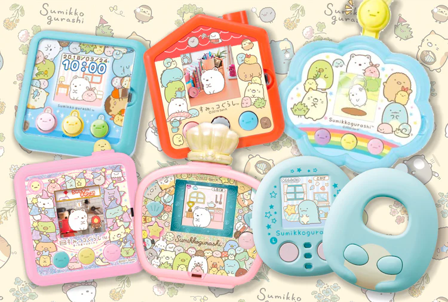
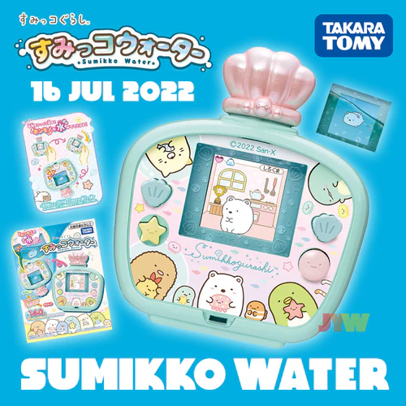
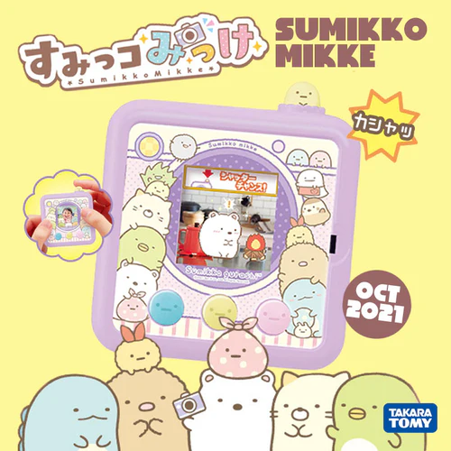
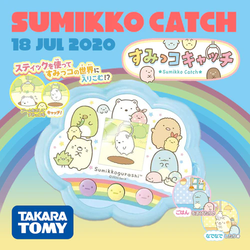

❤ Not sure which Color Screen Tamagotchi to get? Check out Tamagotchi Color Comparison Site by u/disposablepie.
❤ PNG transparent faceplate templates that you can use to design your own faceplates for various Tamagotchi and Sumikko models. Credits to @aprincessofmars
❤ Video tutorial on how to print faceplates yourself
Collection of Downloads and Guides of the Sumikko Gurashi Digital Toy Series by Takara Tomy

❤ All Sumikko devices printable faceplate templates in 1 page

English Translation Guide with Password Codes - Translated by Rachel for Fuzzy N Chic

English Translation Guide with Password Codes - Translated by Rachel for Fuzzy N Chic

English Translation Guide with Password Codes - Translated by Rachel for Fuzzy N Chic and image editing by Kamila IG: @koishigotchi
Printable Faceplates created by @aprincessofmars